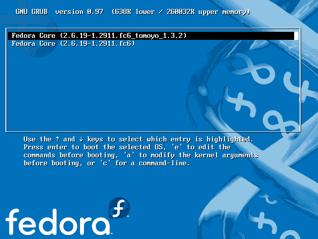
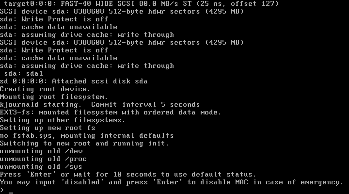
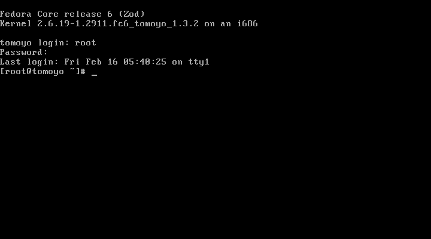
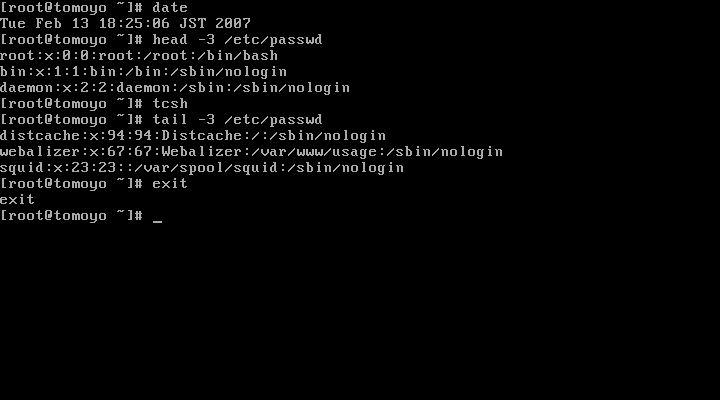
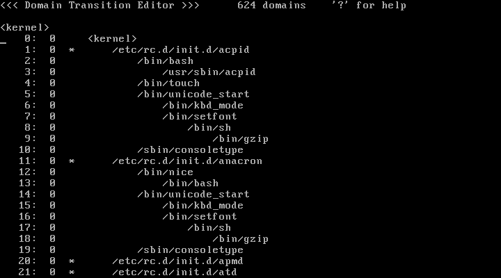
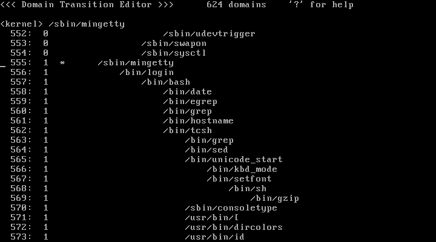
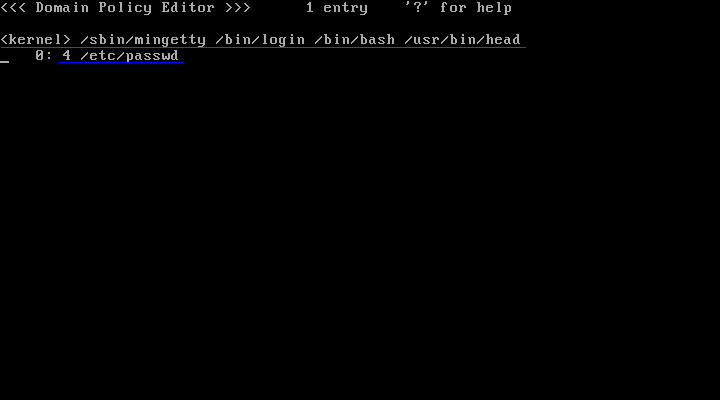
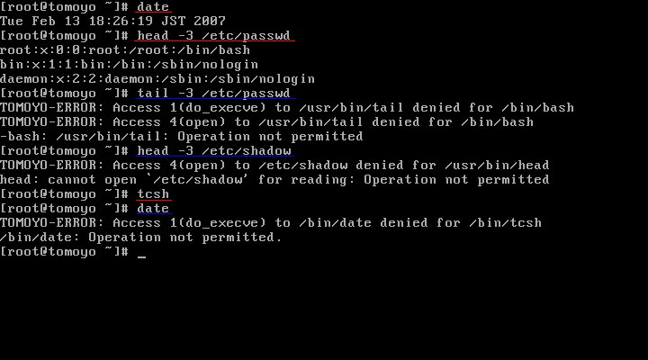

以下では、Fedora Core 6にTOMOYO Linux 1.3.2を導入する手順を解説します。この手順書に従って操作すれば、 TOMOYO Linuxの基本的な機能を体験し、簡単な設定と運用が行えるようになります。
導入の流れは以下の通りです。
Fedora Coreは、インストール時のデフォルトでSELinuxが有効になっています。 本来TOMOYO LinuxとSELinuxは共存が可能ですが、混乱を避けるためにSELinuxを無効にしておくことを推奨します。
SELinuxを無効にするには、/etc/selinux/configファイルのSELINUX=の行を以下のように変更します。
SELINUX=disabled
変更が終わったらLinuxを再起動して、getenforceコマンドでSELinuxが無効になっているかを確かめてください。
# getenforce
Disabled
TOMOYO LinuxはLinuxカーネルへのパッチとして提供されており、 本来はLinuxカーネルのソースコードにパッチを適用する作業が必要になります。 しかしFedora Core 6の場合は、TOMOYO Linuxのパッチを当てたコンパイル済みカーネルパッケージが 提供されているので、今回はそれを利用します。
まずはパッケージをダウンロードします。
# wget http://osdn.dl.sourceforge.jp/tomoyo/23851/kernel-2.6.19-1.2911.fc6_tomoyo_1.3.2.i586.rpm
次に、ダウンロードしてきたパッケージをインストールします。
# rpm --install kernel-2.6.19-1.2911.fc6_tomoyo_1.3.2.i586.rpm
この際特にメッセージは表示されませんが、 インストールに成功すれば/boot/grub/grub.confに以下の記述が追加されているはずです。
title Fedora Core (2.6.19-1.2911.fc6_tomoyo_1.3.2)
root (hd0,0)
kernel /vmlinuz-2.6.19-1.2911.fc6_tomoyo_1.3.2 ro root=/dev/VolGroup00/LogVol00
initrd /initrd-2.6.19-1.2911.fc6_tomoyo_1.3.2.img
今後カーネルの選択を行いやすくするために、 /boot/grub/grub.confの"timeout="と"hiddenmenu"の行を コメントアウトしておきます。
#timeout=5
#hiddenmenu
カーネルの次は、TOMOYO Linuxのツールをインストールします。 ツールには、ポリシーの管理を行うプログラムが収録されています。
カーネルと同様、Fedora Core 6にはコンパイル済みのtarballが用意されていますので、 それをダウンロードして解凍します。 ツールは/root/ccstoolsディレクトリに置くことにします。
# cd /root # wget http://osdn.dl.sourceforge.jp/tomoyo/23851/ccs-tools-1.3.2-i386-FC6.tar.gz # tar zxf ccs-tools-1.3.2-i386-FC6.tar.gz
ツールを置いたディレクトリにパスを通しておきます。bashを使っている場合には以下のようにします。
# echo 'export PATH=$PATH:/root/ccstools' >> ~/.bashrc # source ~/.bashrc
ツールのうち、ポリシーを読み込むスクリプトである.initは、ルートディレクトリに移動しておきます。
# mv /root/ccstools/.init /
カーネルの起動時にポリシーを読み込むため、/.initをカーネルのコマンドラインに追加します。 /boot/grub/grub.confのTOMOYOカーネルのエントリのkernel行に以下のようにinit=/.initを追加してください。
title Fedora Core (2.6.19-1.2911.fc6_tomoyo_1.3.2)
root (hd0,0)
kernel /vmlinuz-2.6.19-1.2911.fc6_tomoyo_1.3.2 ro root=/dev/VolGroup00/LogVol00 init=/.init
initrd /initrd-2.6.19-1.2911.fc6_tomoyo_1.3.2.img
以上でTOMOYO Linuxのインストールは終了です。続いて設定に移ります。
TOMOYO Linuxの設定を保存するディレクトリは/etc/ccsです。このディレクトリをあらかじめ作っておきます。
# mkdir -m 700 /etc/ccs
TOMOYO Linuxには多くの機能があり、どの機能をON/OFFにするのかの設定をプロファイルとよびます。 プロファイルは複数作成して切り替えて使うことができます。 すべてのプロファイルは/etc/ccs/status.txtという単一のファイルに保存します。
今回はファイルに対するアクセス制御の機能のみを利用するため、 以下のようにして/etc/ccs/status.txtを作成します。
# cat > /etc/ccs/status.txt << EOF 0-COMMENT=-----DISABLED_MODE----- 0-MAC_FOR_FILE=0 0-TOMOYO_VERBOSE=0 1-COMMENT=-----ACCEPT_MODE----- 1-MAC_FOR_FILE=1 1-TOMOYO_VERBOSE=0 2-COMMENT=-----PERMISSIVE_MODE----- 2-MAC_FOF_FILE=2 2-TOMOYO_VERBOSE=1 3-COMMENT=-----ENFORCE_MODE----- 3-MAC_FOR_FILE=3 3-TOMOYO_VERBOSE=1 EOF
status.txtの1行は以下のような構文になっています。
（プロファイル番号）-（設定項目）=（制御モード）
すなわち、行頭の番号がプロファイルを切り替えるためのプロファイル番号で、 '=' の左が設定項目、'=' の右が制御モードです。
設定項目COMMENTは、プロファイルを区別しやすくするためのコメントで、TOMOYO Linuxの機能には影響を与えません。
設定項目MAC_FOR_FILEは「ファイルに対するアクセス制御」を表しており、 制御モードが0なら無効、1なら学習、2なら確認（アクセス拒否ログを出力するが実際には拒否しない）、3なら強制、 という設定が行えます。
設定項目TOMOYO_VERBOSEは「アクセス拒否の情報をコンソールに出力するかどうか」を表しており、 制御モードが0なら出力なし、1なら出力ありになります。
上記設定では、プロファイル番号が0〜3の4つのプロファイルを作成しており、それぞれの意味は以下のようになります。
| プロファイル0 | ファイルに対するアクセス制御を無効にする、コンソールにアクセス拒否を出力しない |
|---|---|
| プロファイル1 | ファイルに対するアクセス制御を学習モードにする、コンソールにアクセス拒否を出力しない |
| プロファイル2 | ファイルに対するアクセス制御を確認モードにする、コンソールにアクセス拒否を出力する |
| プロファイル3 | ファイルに対するアクセス制御を強制モードにする、コンソールにアクセス拒否を出力する |
プロファイル1の学習モードで行ったアクセスを元にポリシーを作成し、 プロファイル2の確認モードで仮運用して必要なポリシーが作成できているかを確かめ、 プロファイル3の強制モードで本運用としてアクセス制御を行う、 というのが基本的な運用の流れです。
TOMOYO Linuxのポリシーは先ほどの学習用のプロファイル（プロファイル1）を用いて作成できますが、 その前にいくつか準備が必要です。ポリシーの作成準備は以下の流れで行います。
ポリシーを変更することができるプログラムを、/etc/ccs/manager.txtというファイルで指定します。 ccs-toolsの中の6つのプログラムを以下のように指定してください。
# cat > /etc/ccs/manager.txt << EOF /root/ccstools/loadpolicy /root/ccstools/editpolicy /root/ccstools/setlevel /root/ccstools/setprofile /root/ccstools/ld-watch /root/ccstools/ccs-queryd EOF
TOMOYO Linuxのログは、アクセスが許可された要求のログと、アクセスが拒否された要求のログの2種類に分けることができます。 今回は、アクセス拒否ログのみを保存する設定を行います。
ログを保存するには、ccs-toolsのccs-auditdというデーモンプログラムを使用します。 アクセス拒否ログのみを保存する設定でccs-auditdをLinuxの起動時に実行するには、 以下のコマンドで/etc/rc.d/rc.localの末尾にccs-auditdの起動コマンドを追加します。
# echo "/root/ccstools/ccs-auditd /dev/null /var/log/tomoyo/reject_log.txt" >> /etc/rc.d/rc.local
この設定では、/var/log/tomoyo/reject_log.txtにアクセス拒否ログが保存されます。 ログを保存するディレクトリをあらかじめ作っておきます。
# mkdir -p /var/log/tomoyo
ポリシー生成の前には、以下の7種類の例外を設定しておく必要があります。
7種類のうち上から6種類の例外ポリシーを自動的に生成するスクリプトmake_exception.shと、 7種類目のシンボリックリンクに関する例外ポリシーを自動的に生成するスクリプトmake_alias.shが、 ccs-toolsに用意されています。
これらを使って例外ポリシーを生成して保存するには以下のようにします。
# make_exception.sh > /etc/ccs/exception_policy.txt # make_alias.sh >> /etc/ccs/exception_policy.txt
make_alias.shは10分以上時間を要する場合がありますので気長にお待ちください。
以上でTOMOYO Linuxを使うための基本的な設定は終わりです。
それでは、いよいよTOMOYO Linuxカーネルで起動してみましょう。
まずはLinuxを再起動します。
# reboot
カーネルの選択画面でTOMOYO Linuxのカーネルを選択してEnterを押します。

起動途中で以下の画面が表示されます。

この状態でEnterキーを押すか10秒間待つと、先ほど作成した例外ポリシーが読み込まれ、 Linuxが起動します。 起動プロセスが終了するとログインプロンプトが表示されるので、rootでログインしてください。

今回は、以下の操作をTOMOYO Linuxに学習させ、強制モードでは学習させた操作以外が拒否されることを確かめます。
まずは学習モードの設定を行います。
プロファイルの作成時に作成したとおり、プロファイル1が学習モードです。 このプロファイルを以下のコマンドで/sbin/mingettyから起動されるプログラムに割り当てます。
# setprofile -r 1 '<kernel> /sbin/mingetty'
このコマンドは、
/sbin/mingettyから起動されるプログラムすべてにプロファイル1を割り当てる
という意味です。/sbin/mingettyはログインシェルを起動するプログラムで、 /sbin/mingetty以下にプロファイル1を割り当てることで、ログイン後の操作を学習する設定になります。 設定は即時に有効になるので、上記setprofileコマンドを実行したあとは既に学習モードになっています。
<kernel> /sbin/mingettyを引用符で囲まないと、シェルのリダイレクト機能が働いて /sbin/mingettyの内容が書き換えられてしまいますのでくれぐれもご注意ください。
それでは、前述の4つの操作を学習させましょう。学習は通常のLinuxのように操作することで行えます。

一見普通のLinuxと変わりなく操作できますが、 裏ではTOMOYO Linuxがアクセス許可を監視し、 操作ごとにポリシーとしてメモリ上に記憶しています。
生成されたポリシーの参照・編集には、ccs-toolsのeditpolicyを用います。
# editpolicy
editpolicyを起動すると、TOMOYO Linux起動後に、プロセスがどのように呼び出されたかが表示されます。 この「プロセスの呼び出し」を、TOMOYO Linuxでは「ドメイン遷移」とよびます。

ドメイン遷移の中から、mingettyを探してみてください。ドメイン遷移からmingettyを検索するには、 'f'キーを押して、下に出たプロンプトで"mingetty"と入力してEnterキーを押します。

行番号の右側に表示されている数字は、そのドメインに割り当てられているプロファイル番号です。 /sbin/mingetty 以下のドメインが 1 になっているのは、先ほど setprofile コマンドを用いて 1 を割り当てたためです。
/sbin/mingetty下の/bin/login以下では、ログインしてからのプロセス実行履歴が分かります。 その中からさらに、/usr/bin/headコマンドを探してみてください。 headコマンドの行でEnterキーを押すと、以下の画面が表示されます。

これは先ほどの操作で学習したポリシーで、
<kernel> /sbin/mingetty /bin/login /bin/bash /usr/bin/headというドメイン（赤下線）は、
- /etc/passwdへの読み込みアクセスを許可する（青下線）
ということを意味しています。
TOMOYO Linuxでは、 「プログラムの絶対パスで表現したプロセスの実行履歴」をドメインとよびます。 すべてのプロセスはいずれか1つのドメインに所属しており、 アクセス制御はドメインごとにポリシーとして設定します。
ドメインにおけるファイルに対するアクセス許可は、 通常のLinuxにおけるファイルに対するパーミッションと 同様の3種類（読み込み・書き込み・実行）の他にも、 ファイルの新規作成・削除・名前変更なども設定できます。
ポリシーはメモリ上に置かれており、このままLinuxをシャットダウンしてしまうと、 学習したポリシーも失われてしまいます。ポリシーをハードディスクの/etc/ccs以下に 保存するには以下のようにします。
# savepolicy
それでは、先ほど自動学習したポリシーを使って、強制アクセス制御を体験してみましょう。
'q'キーでeditpolicyを終了してから、以下のコマンドを実行します。
# setprofile -r 3 '<kernel> /sbin/mingetty'
この操作により、/sbin/mingetty以下のドメインに強制アクセス制御が適用されるようになります。
この状態で以下の操作を行ってみます。

図中の赤下線のコマンドは先ほど学習モードで行った操作ですので、問題なく実行できます。 逆に青下線のコマンドはエラーになります。
エラーになった操作のログは、ccs-auditdによって/var/log/tomoyo/reject_log.txtに保存されています。
#2007-02-13 18:26:24# pid=2284 uid=0 gid=0 euid=0 egid=0 suid=0 sgid=0 fsuid=0 fsgid=0 <kernel> /sbin/mingetty /bin/login /bin/bash 1 /usr/bin/tail #2007-02-13 18:26:24# pid=2284 uid=0 gid=0 euid=0 egid=0 suid=0 sgid=0 fsuid=0 fsgid=0 <kernel> /sbin/mingetty /bin/login /bin/bash 4 /usr/bin/tail #2007-02-13 18:26:27# pid=2285 uid=0 gid=0 euid=0 egid=0 suid=0 sgid=0 fsuid=0 fsgid=0 <kernel> /sbin/mingetty /bin/login /bin/bash /usr/bin/head 4 /etc/shadow #2007-02-13 18:26:32# pid=2307 uid=0 gid=0 euid=0 egid=0 suid=0 sgid=0 fsuid=0 fsgid=0 <kernel> /sbin/mingetty /bin/login /bin/bash /bin/tcsh 1 /bin/date
このようにTOMOYO Linuxのファイルに対するアクセス制御を用いれば、
行ったかを監視することもできます。